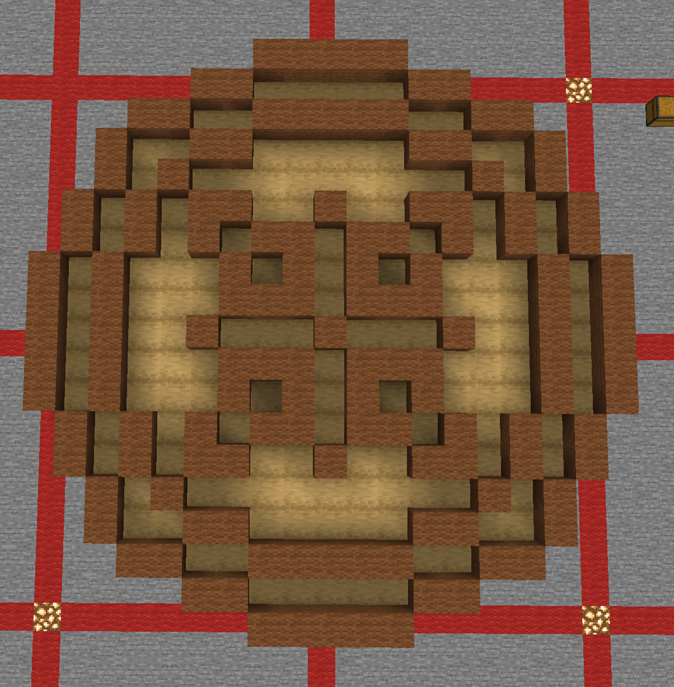

For this project we made a cultural object of our choice. I made a mooncake using stripped oak logs and brown wool. Mooncakes have a lot of significance in Chinese culture and holds a lot of sentimental value for me. My family always splits mooncakes to share and we love trying new flavors and types.